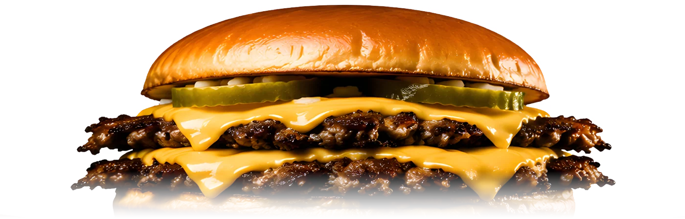

01
The Original
Bachelor Burger
One crisp-edged grass-fed beef patty, deluxe American cheese, thin sweet onion, pickles, and Stosh’s signature sauce on our homemade sourdough-potato bun.
Thin. Crisp. Unforgettable.
Grass-fed beef. Lacy caramelized edges. A bronzed homemade sourdough-potato bun. No shortcuts—just a classic made exceptionally well.

“If a product cannot be made exceptionally well, it should not be made at all.”
The Details Are the Difference
01
Chosen for clean, robust flavor and smashed fresh for maximum caramelization.
02
A bronzed sourdough-potato bun, made to complement the burger—not compete with it.
03
Deluxe American cheese, sweet onion, crisp pickles, and a signature sauce in perfect proportion.
Meet the Founder
Stosh Oskwarek has spent a lifetime turning exacting ideas into real products and successful brands. His standard is simple: understand every detail, improve what others overlook, and never serve anything that is merely “good enough.”
Stosh’s Famous Smash Burgers brings that same maker’s discipline to a food people already love—and gives it the ingredients, technique, and hospitality it deserves.
One Concept, Endless Destinations
Weddings · Corporate Events
Reunions · Celebrations
Farmers Markets · Vineyards
Fairs · Festivals
Professional, self-contained, and designed to be a seamless addition to the event.
Based in Kent, CT, serving events within about 100 miles
Booking Inquiry
Tell us a little about your event, and we’ll reply by email.
Your inquiry is on its way. We’ll reply by email soon.